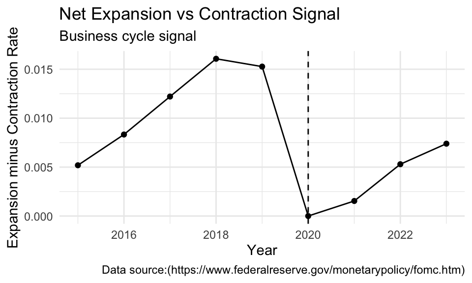
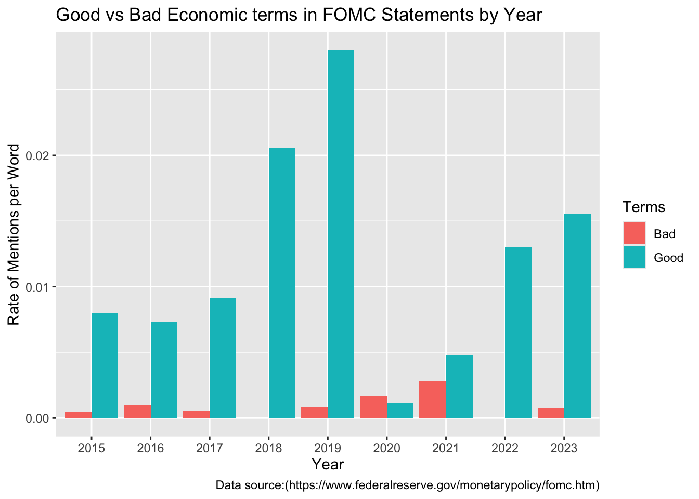
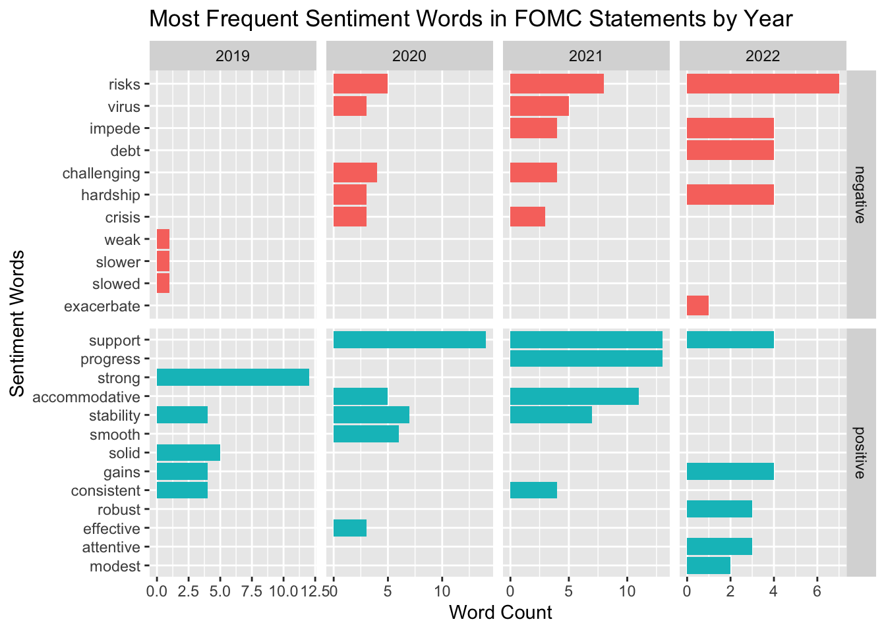

Text Analysis
How FOMC Communication Shifted Before and After COVID-19
1. Introduction
In The United State, The Federal Open Market Commitee ( FOMC)1 regulary release its statement every months after each meeting to explain its assessment of economic condition and its decisions regarding to interest rates and monetary policy ( whether increase/ decrease of interest rate or money supply). These statements let us get some insight about how the Federal reserve interprets the change in inflation, employment and overall economic activity.
The COVID-19 had severe affect to the economy around the world. This leads to a sharp change in economic activity. Economic growth declined, unemployment rose dramatically, and financial markets experienced significant volatility.During such periods of uncertainty, the way policymakers communicate economic conditions becomes particularly important.
In this project I will use text analysis to examine how the language in FOMC statements changed before, during, and after the COVID-19 shock. I will analyse the content of FOMC statement from 2015 to 2023, mainly focus on several aspects of communication including, the most frequently used words in the statements, whether the language signals contraction or expansion, how often the Fed uses positive or negative economic language and how often the Fed uses positive versus negative economic language.
2. Data
In this project I will be using the data from the FOMC statements from 2015 to 2023. There are 36 observations and 5 columns containing the period, date, year, month, and full text of the statement. Because FOMC statements are released regularly and follow a similar structure, they provide a useful source for analyzing how the Federal Reserve communicates changes in economic conditions over time.
3. Data Cleaning
In this project, I will use 4 str_fuction. I use str_to_lower() to make all words lowercase, str_replace_all() to remove line breaks, and str_squish() to remove extra spaces. I also use str_count() with the regular expression \S+ to count the total number of words in each statement. These steps make the text consistent and allow fair comparison across statements.
I use unnest_tokens() to split each FOMC statement into individual words which will make it posible for me to count word frequency and join the words to sentiment lexicons later in the analysis.
4. Results
4.1.The most frequently used words in the statements
In this section, I count individual words after removing stop words to see most common terms in FOMC statements. This will help me see what are the words that are emphasized the which can be Inflation or unemployment or market.I use wordcloud2() to visualize the most frequent words.
This figure is a word cloud displaying the most frequent words used in the FOMC policy statement from 2015-2023 after removing common stop words. The visualization does not have axes but in stead, the size of each words represents its frequency in the statement. The larger ones appear more often in the text. Word frequency range from relatively small count for less common terms to higher count with the larger word in the middle. The appearance shows words such as ” Inflation”, “committtee”, ” economics”, ” market” appears most frequent which indicated that the FOMC communication strongly emphasizes inflation condition, monetary policy decisions, and overall economic activity
4.2.When did the FOMC statement language shows that the economy is expanding or contracting, Business Cycle Signal?
I create one regular expression for expansion-related words such as “strong,” “robust,” and “improving,” and another for contraction-related words such as “slowed,” “decline,” and “recession.” I used \b to match whole words only, and grouped endings like (ed|ing) to capture multiple forms of the same word.I used str_count() to count how often expansion and contraction words appear in each statement. Then I divided by total words to create a normalized rate, so longer statements would not automatically have larger counts.

This is a line chart showing the net expansion vs contraction signal in the FOMC statement over time. The x-axis represents year, ranging from 2015 to 2023. The y-axis represents the expansion - contraction rate, which ranges from approximately 0 to 0.0016. Each point represents average signal for that year, connected with a line to show the trend. This chart shows that expansionary language increased steadily from 2015 to 2018 which means the economics is likely to be in the good conditions as the FOMC statement is more optimistic. After that, it declined slightly in 2019, and then dropped sharply in 2020, marked by a vertical dashed line indicating the COVID-19 shock. After 2020, the signal gradually rises again through 2023, which suggest that the FOMC become somewhat more expansionary after the pendamic.
4.3.When did the FOMC statement use good vs bad economic terms the most or the least?
Similarly, I create patterns for positive economic language about growth, inflation, and employment, and separate patterns for negative language about inflation, growth, and labor market weakness. These expressions capture both single words and multi-word phrases, which gives a more realistic measure of tone.Then I again use str_count() to count how often positive and negative economic phrases appear in each statement. I convert these counts into rates per word to compare statements fairly across years. This will helps show whether the Fed’s communication became more negative during COVID and more positive afterward.

This is a side-by-side bar chart comparing the frequency of good vs bad economics terms used in the FOMC statement by year. The x axis represents Year, ranging from 2015 to 2023. The y axis represent the rate of mention per words, ranging approximately from 0 to 0.038.For each year, two bars are displayed side by side, red bar indicates bad term(such as slowed, weakened, or increased inflation), while the light blue bar indicates good terms(such as strong, growth, or improving). The chart suggests that for most of the years, good economic terms appears more frequently than bad terms which means that the Federal Reserve generally communicates an optimistic or stable outlook for the economy. However,the frequency of bad economic terms increases slightly around 2020–2021, reflecting more negative economic discussion during the COVID-19 period.After 2021,the frequency of negative terms declines again while positive terms remain relatively strong which shows that the communication tone of the Federal Reserve become more positive as the economic condition starts to recover.
4.4 What are sentiment words that FOMC statement mention, how did it change by years?
I used get_sentiments(“bing”) to classify words as positive or negative which allows me to identify which sentiment words appeared most often and how the tone changed across years.I then use the inner_join() matches words from the FOMC statements to the Bing sentiment lexicon, and count() shows which positive and negative words are most frequent. The figure will adds detail to the earlier tone analysis by showing exactly how FOMC language changed during the COVID period.

This is a faceted horizontal bar chart showing the most positive and negative sentiment words in the FOMC statement for selected year. X axis represents word count, ranging from 0 to around 12 mentions.The y axis represents the lists of sentiments words identified in the each statements. The charts divided into panel by year (2019-2022) and sentiment category ( negative and positive),with each bar representing how often a specific word appears in that year’s statements. In the figure, negative words such as “Risk”, “Virus”, “impede” appear increasingly in 2020 and 2021 which is during COVID shock, indicating that there is economic uncertainty during this period.In 2022, negative terms such as “risks” and “debt” remain relatively frequent, indicating that concerns about economic challenges persisted even as recovery began.At the same time, positive words such as ” support”, “progress”, “strong” still continue to appear often, which shows that the Fed is trying to emphasize policy to maintain economic stability.
Conclusion
The analysis shows that the Federal Reserve’s communication has shifted during the Pandemic period. Base on the statements, expansionary language decline sharply in 2020 because the Fed mentioned words like “Slow” ” Decline” more often during that time. Negative economic terms such as “inflation increase”, “job loses” have higher mentioned rate, while negative words such as ” risk”,“virus”,” challenging” reflecting the economic uncertainty caused by COVID-19.At the same time, positive terms such as “support,” “progress,” and “strong” continued to appear, emphasizing the Federal Reserve’s role in stabilizing the economy. The result suggests that FOMC statements adjust their tone to reflect changing economic conditions while also focus on policy support and economic stability.
Reference
Footnotes
—. “The Fed - Meeting Calendars and Information.” Board of Governors of the Federal Reserve System,https://www.federalreserve.gov/monetarypolicy/fomc.htm. Accessed 2 Mar. 2026.↩︎